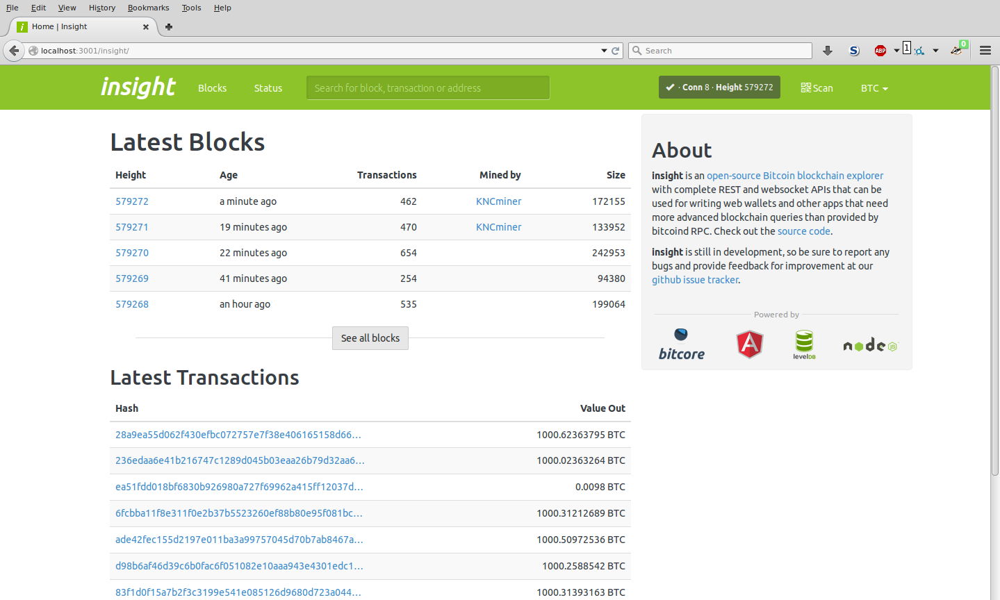

This tutorial will go over the basics of spinning up a Bitcore node. Before you begin, you'll need to have around 8GB of memory and about 200GB of disk space available to store the Bitcoin blockchain plus additional database information. Both 64bit Mac OS X and GNU/Linux are currently supported. The process of downloading the blocks and indexing can take upwards of 24 hours on livenet and 2 hours for testnet, depending on Internet connection and other factors such as CPU and disk speed. It's also possible to use an existing Bitcoin data directory, which will speed up the process as reindexing can take upwards of 12 hours for livenet and 1 hour for testnet.
It's recommended to install the Node Version Manager, as this makes it simple to switch between different Node.js versions. We will specifically need to install and run v0.12 or v4 LTS. Please follow the directions at https://github.com/creationix/nvm#install-script and then run:
nvm install v4
For GNU/Linux distribution such as Debian or Ubuntu:
apt-get install libzmq3-dev build-essential
For Mac OS X:
brew install zeromq
Bitcore comes with a command line utility for creating and managing your full node. To get started, run these commands, and you'll then have the bitcore command in your path:
npm install -g bitcore
Note: Do not run this command with sudo or with root privileges as this will lead to permission issues.
At this point, if you just want to sync the blockchain and run the Insight Block Explorer, then you are done! Just run:
bitcored
This will start your node from a config file in ~/.bitcore with the insight-api and insight-ui services enabled.
If you would like to create additional nodes that are not in your global npm installation directory, or run the Bitcore Wallet Service, please do the following:
bitcore create mynode
or for testnet:
bitcore create mynode --testnet
This will create the directory "mynode" in your current working and install all of the necessary dependencies and configuration files for your node.
To create a node if you already have a Bitcoin data directory that you want to use:
bitcore create -d <path-to-datadirectory> mynode
The database directory will likely be at ~/.bitcore. Note that you'll need to have txindex enabled in your bitcoin configuration file. To enable txindex, add txindex=1 and reindex=1 to ~/.bitcoin/bitcoin.conf. After you start Bitcoin once with reindex=1 you should remove it, otherwise it will reindex every time the node starts. Be sure to leave txindex=1, though.
For installation instructions regarding the Bitcore Wallet Service, please see wallet service
Your node can run on "livenet" or "testnet". If you wish to configure the network, you can do so by opening the bitcore-node.json configuration file with your favorite text editor (vi is used here):
cd mynode
vi bitcore-node.json
Then change the network value to "testnet" or "livenet". Here is an example configuration file:
{
"network": "livenet",
"port": 3001,
"services": [
"bitcoind",
"web"
],
"servicesConfig": {
"bitcoind": {
"datadir": "/home/user/.bitcoin",
"exec": "/home/user/bitcoin/src/bitcoind"
}
}
}
Note: This configuration includes an exec path to a locally compiled bitcoind and shares the datadir with standard .bitcoin location.
As mentioned previously, this process can take several hours to complete, so you can start the script and come back later to check on the status. Let's get started!
cd mynode
bitcored
This will start up all of the services that have been enabled in your configuration file. The first service that will most likely be started is Bitcoin itself, followed by others that depend on it, such as the Database and Address Service. The syncing process will connect to other Bitcoin peers in the network and start downloading the blockchain, verifying proof-of-work, and creating indexes for querying the blockchain. Both Bitcoin and the Database Service will log the status of the initial synchronization process.
Get details about the genesis block:
bitcore call getBlock 000000000019d6689c085ae165831e934ff763ae46a2a6c172b3f1b60a8ce26f
Get the details of a transaction (with address information):
bitcore call getDetailedTransaction c4b968504a34a27482bf0f1f9d9b93b74fddbf3877cfd92e2fde48c6ba8c791c
Note: If you created your node by running bitcored instead of bitcore create mynode, your node will already have these services installed and you can skip this command.
While running individual CLI commands is a useful way to interact with your node, being able to view it in a GUI is even be better. Let's get started by installing the blockchain explorer Insight!
bitcore install insight-api insight-ui
This will run an npm command to download the packages insight-api and insight-ui and add them to your node's package.json as well as bitcore-node.json. The next time you start up your node, the services will be enabled, and you'll be able to open your web browser to view the explorer.
Go to the URL (default):
http://localhost:3001/insight/
